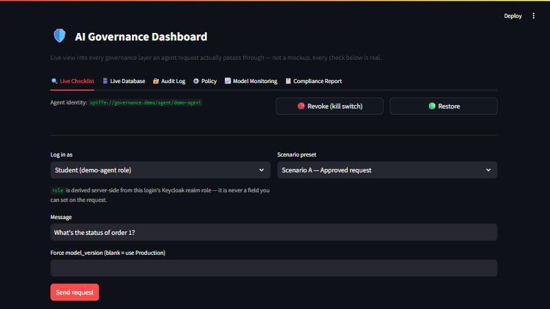

A multi-agent AI system where every request passes seven governance layers — real identity, policy, data, model, guardrail, tool-authorization and audit controls — before it is allowed to answer. No mocked checks. Runs on a 16 GB laptop.
Every request walks this chain in order. Any layer can short-circuit straight
to logged the moment it denies — a blocked request is still
recorded, because you need the record of the denial as much as the allow.
Layers 3, 5 and 6 all query the same OPA instance. It is one shared
policy hub, not a single stage — which is why authorization rules live in four
readable .rego files instead of scattered if statements.

A student tries to reach the admin agent. The handoff itself
requires permission, so it is refused before the admin agent's tools are even
reachable:
$ docker compose exec agent python demos/scenario_b_policy_block.py blocked=True blocked_at_layer=tool_call role=demo-agent identity pass Keycloak user 'student' + SPIFFE ID attached policy pass identity is active, not revoked data pass columns to mask this request: ['email'] model pass using version 2 (groq/qwen/qwen3.8-27b, risk_tier=low) agent_guardrails pass input check passed tool_call FAIL routing to 'admin_agent' forced by request, but denied: role 'demo-agent' not permitted to call tool 'route:admin_agent' logged pass trace 747520e6-999c-4a61-aede-0d314e7a470a recorded
Most multi-agent systems authorize tool calls. This one authorizes the handoff too — so a compromised orchestrator cannot reach a privileged agent's toolset at all.
The model-promotion pipeline runs each candidate through four gates and promotes
whichever scores best. The quality gate reads an LLM-judge score out of 5. It read
the metric key answer_correctness/v1/mean — a key only MLflow's
built-in judge emits. A custom metric emits answer_correctness/mean.
quality = metrics.get("answer_correctness/v1/mean", 0.0) # always 0.0
Every candidate scored 0.0. The gate never failed anything, and the
"best" model was chosen on coherence and latency alone. Nothing errored — the
pipeline ran green and promoted models, just on the wrong criterion.
Fixing it changed which model actually reached production:
| Model | Measured quality | Before fix | After fix |
|---|---|---|---|
gpt-oss-20b | 3.5 / 5 | promoted, on a 0.0 tie-break | Staging |
qwen3.8-27b | 4.1 / 5 | Staging | Production |
A governance control that silently passes everything is worse than no control, because you trust it. The lesson: every gate needs a test proving it can actually fail.
The eighth compliance item needs a companion package that is currently a name-reservation stub on PyPI. The report says so rather than claiming a pass — which is rather the point of the project.
This builds on the AI Governance Teaching Platform by @data-guru0, which is the origin of the seven-layer architecture, the Compose topology, the Rego policies and the dashboard. Credit for that design belongs to its author. My work was getting it to actually run, and hardening it:
| # | Bug | Impact |
|---|---|---|
| 1 | Quality gate read the wrong metric key | Scored every candidate 0.0; picked winners on the wrong criterion |
| 2 | Pinned Groq model had been retired | Every model evaluation crashed with a 404 |
| 3 | No max_tokens on any completion call | Free tier rejected requests outright (est. 1168 vs a 1000/min ceiling) |
| 4 | No PYTHONUNBUFFERED | All startup logging invisible; failures looked like silence |
| 5 | Data layer failed open when the catalog was unreachable | Served unmasked PII. An unreachable catalog is not evidence a column is safe. |
Plus new functionality:
MODEL_PROFILE switch between an all-Groq set and the original two-provider set, including a provider-agnostic LLM judge — MLflow's genai metrics have no groq:/ URI scheme.Stated plainly, because a governance project that hides its own weaknesses has missed the point:
The agent refusing to boot without a valid workload identity is not on this list — that is a control working correctly.